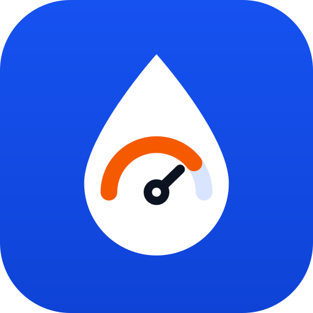
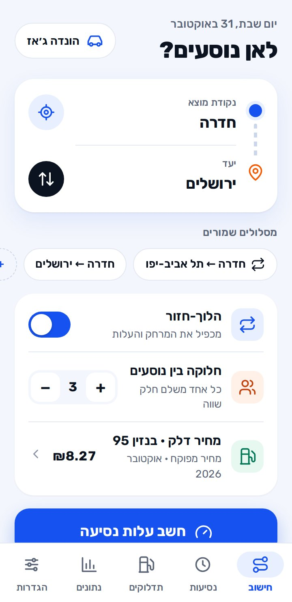
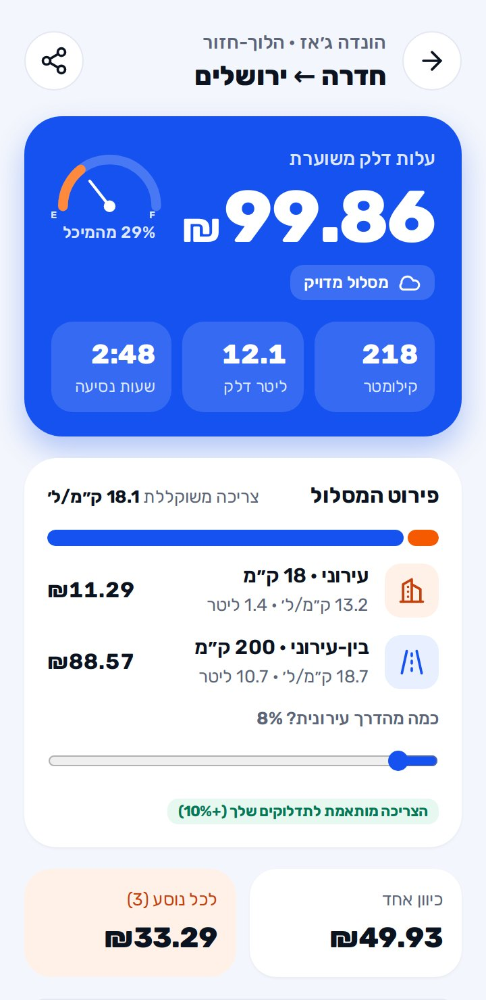
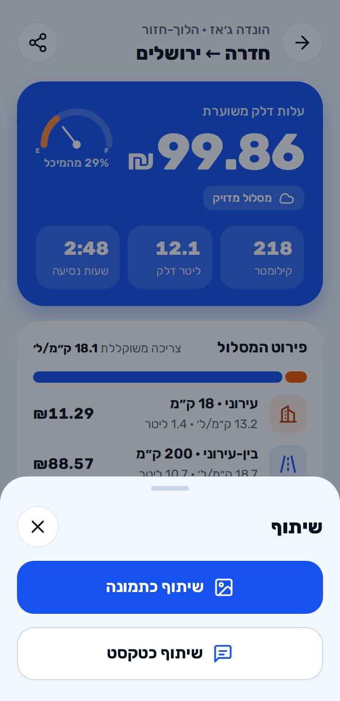
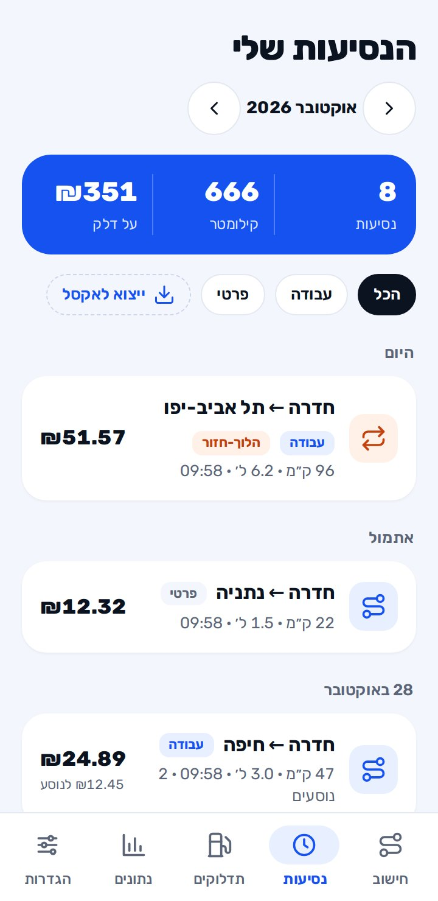
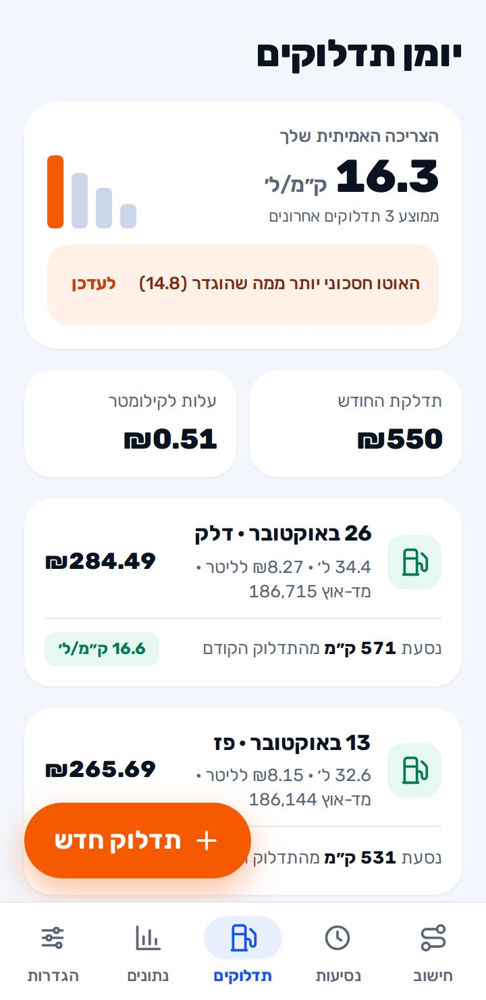
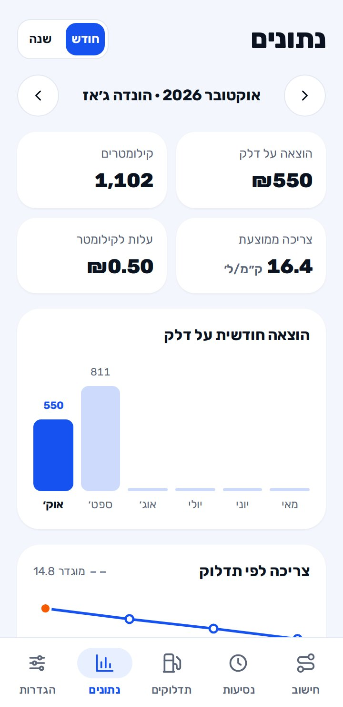
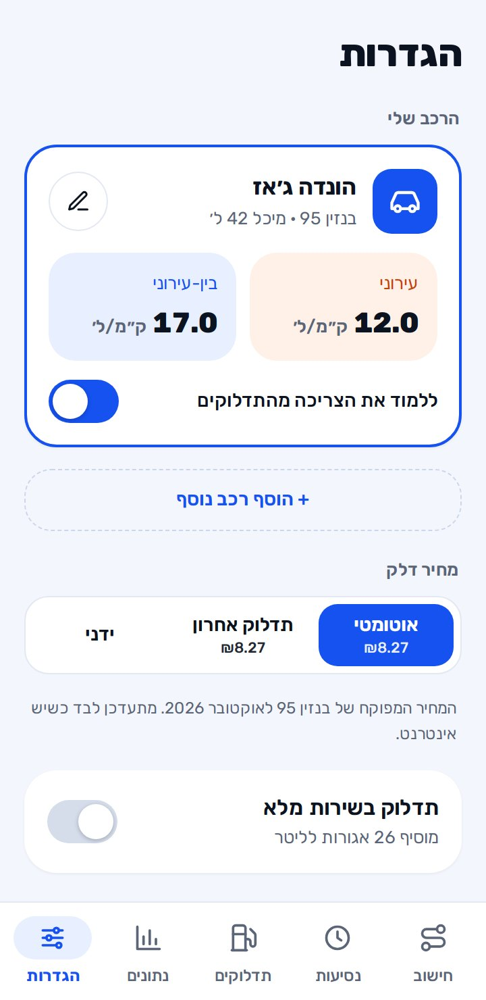
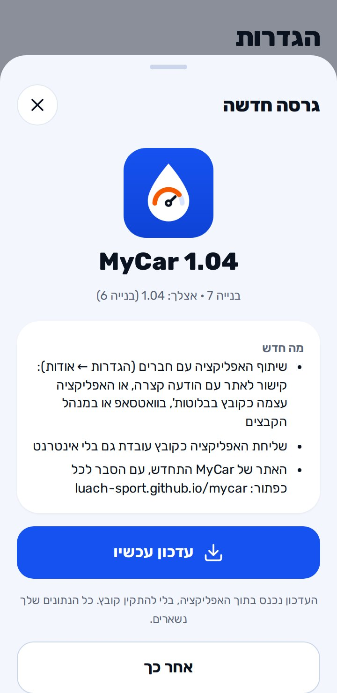
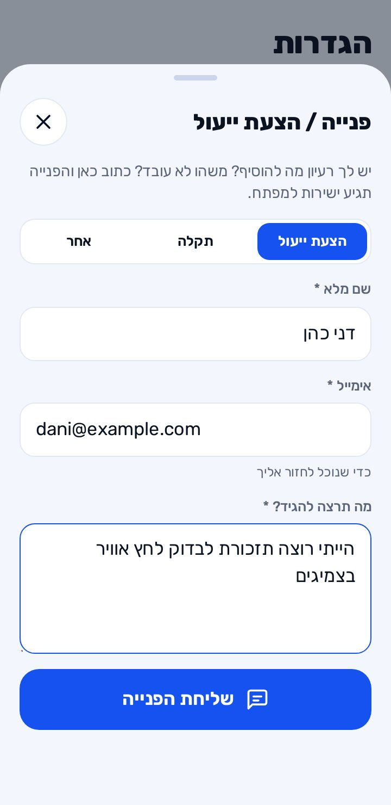

MyCar
עד הטיפה האחרונהכמה עולה כל נסיעה בדלק, יומן נסיעות ותדלוקים, וכמה האוטו באמת צורך. הכל נשמר רק בטלפון.

מה חדש
גרסה 1.04- שיתוף האפליקציה עם חברים (הגדרות ← אודות): קישור לאתר עם הודעה קצרה, או האפליקציה עצמה כקובץ בבלוטות', בוואטסאפ או במנהל הקבצים
- שליחת האפליקציה כקובץ עובדת גם בלי אינטרנט
- האתר של MyCar התחדש, עם הסבר לכל כפתור: luach-sport.github.io/mycar
עובד בלי אינטרנט
- החישוב עובד גם בלי אינטרנט: כל היישובים בארץ שמורים בטלפון, והמרחק מוערך לפי הכבישים. מסלול שכבר חושב פעם נשמר, והתוצאה שלו מדויקת גם בלי חיבור.
- כפתור המיקום עובד עם GPS, בלי אינטרנט.
- הנסיעות, התדלוקים, הנתונים והתזכורות נשמרים רק בטלפון.
- שליחת האפליקציה לחבר כקובץ עובדת בלי אינטרנט.
כשיש חיבור, האפליקציה מורידה לבד את מחיר הדלק העדכני ומחשבת מסלולים מדויקים, ושומרת אותם לפעם הבאה. כתובת מדויקת (רחוב ומספר) מחפשים כשיש אינטרנט.
התקנה
- מורידים
לוחצים "הורדה לאנדרואיד" למעלה. הקובץ mycar.apk יורד לטלפון.
- מתקינים
פותחים את הקובץ מההתראות או מתיקיית ההורדות. בפעם הראשונה מאשרים "התקנה ממקור לא ידוע".
- מגדירים רכב
בפתיחה הראשונה כותבים שם לרכב, נפח מיכל, סוג דלק וסוג רכב, ולוחצים "יאללה, מתחילים".
אם מופיעה אזהרה של Google Play Protect על אפליקציה לא מוכרת, בוחרים להתקין בכל זאת. זה קורה בכל אפליקציה שלא הורדה מחנות Google Play.
חישוב
המסך הראשי. בוחרים מאיפה ולאן, והאפליקציה מחשבת כמה הנסיעה תעלה בדלק.
- נקודת מוצא ויעדבוחרים עיר, יישוב או כתובת. יישובים נמצאים גם בלי אינטרנט, וכתובת מדויקת צריכה אינטרנט.
- כפתור המיקוםהמקום שבו אתם נמצאים עכשיו נכנס כנקודת המוצא. עובד עם GPS, גם בלי אינטרנט.
- כפתור החיציםמחליף בין המוצא ליעד.
- כפתור הרכבלמעלה בצד. בוחרים רכב, אם הגדרתם יותר מאחד.
- מסלולים שמוריםלחיצה על מסלול ממלאת אותו מיד. "+ שמור מסלול" שומר את המסלול שבחרתם.
- מרחק ידניכותבים כמה ק״מ בעצמכם, במקום לבחור מקומות.
- הלוך-חזורמכפיל את המרחק ואת העלות.
- חלוקה בין נוסעיםעם + ו־− קובעים כמה נוסעים, ורואים כמה משלם כל אחד.
- מחיר דלקאוטומטי (המחיר המפוקח, מתעדכן לבד), תדלוק אחרון, או מחיר שאתם כותבים. אפשר להוסיף תוספת של שירות מלא.
- חשב עלות נסיעהמציג את התוצאה.
מסך התוצאה
כאן רואים כמה הנסיעה עולה, ומאיפה המספר מגיע.
- הסכום הגדולעלות הדלק המשוערת בשקלים.
- המחוגאיזה חלק מהמיכל הנסיעה לוקחת.
- ק״מ, ליטר, שעותאורך הנסיעה, כמה דלק היא צורכת וכמה זמן היא לוקחת.
- פירוט המסלולכמה מהדרך בעיר וכמה בין-עירונית. מזיזים את הפס כדי לשנות את החלוקה, והמחיר מתעדכן מיד.
- כיוון אחד ולכל נוסעהמחיר לכיוון אחד או הלוך-חזור, וכמה משלם כל נוסע.
- עבודה / פרטימסמנים את סוג הנסיעה, כדי לראות אחר כך כמה הוצאתם על כל סוג.
- שמור לנסיעותהנסיעה נכנסת ליומן הנסיעות.
- נווט בווייזפותח את וייז עם היעד.
- שיתוףהכפתור למעלה. שולחים את התוצאה כתמונה של המסך או כטקסט, למשל בוואטסאפ.


נסיעות
היומן של כל הנסיעות ששמרתם, מסודר לפי ימים.
- החיצים ליד החודשעוברים בין חודשים.
- הסיכום הכחולכמה נסיעות, כמה ק״מ וכמה שקלים בחודש.
- הכל / עבודה / פרטימסננים את הרשימה לפי סוג הנסיעה.
- ייצוא לאקסלקובץ עם כל הנסיעות, לפתיחה באקסל או בגוגל שיטס.
- לחיצה על נסיעהפותחת את הפרטים. משם אפשר לשנות את סוג הנסיעה, לחשב אותה שוב, לשתף או למחוק.

תדלוקים
רושמים כאן כל תדלוק, והאפליקציה לומדת כמה הרכב שלכם צורך באמת.
- תדלוק חדשהכפתור הכתום. כותבים כמה שילמתם (או כמה ליטרים), את הקילומטרז׳ מלוח השעונים, והאם מילאתם מיכל מלא.
- הצריכה האמיתיתמהתדלוק המלא השני: כמה ק״מ לליטר הרכב עושה, כמה נסעתם בין תדלוקים, וכמה עולה כל קילומטר.
- לעדכןאם הצריכה האמיתית שונה ממה שהוגדר לרכב, מתקנים בלחיצה אחת.
- צריכה לפי תדלוקגרף שמראה איך הצריכה משתנה מתדלוק לתדלוק.
- לחיצה על תדלוקעריכה או מחיקה.

נתונים
התמונה הגדולה: כמה הרכב עולה לכם.
- חודש / שנהבוחרים על איזו תקופה להסתכל, ועוברים ביניהן עם החיצים.
- ארבעת המספריםהוצאה על דלק, קילומטרים, צריכה ממוצעת ועלות לקילומטר.
- הוצאה חודשית על דלקגרף של ההוצאה בכל חודש.
- עבודה מול פרטיכמה נסעתם והוצאתם על כל סוג נסיעה.

הגדרות
הרכב, המחיר, המראה, וכל השאר.
- הרכב שליהעיפרון פותח עריכה: שם, צריכה בעיר ובין-עירונית, נפח מיכל וסוג דלק. "+ הוסף רכב נוסף" למי שיש יותר מרכב אחד.
- ללמוד מהתדלוקיםכשזה דלוק, החישוב מתאים את עצמו לצריכה האמיתית של הרכב.
- מחיר דלקאוטומטי, תדלוק אחרון או ידני, ותוספת לתדלוק בשירות מלא.
- מראהבהיר, כהה, או לפי הגדרת הטלפון.
- מקומות ומסלולים שמוריםבית, עבודה וכל מקום שחוזרים אליו.
- תזכורותטסט, ביטוח וטיפול (לפי קילומטרים). מגיעה התראה לטלפון.
- נתונים במכשירמה שמור בטלפון לשימוש בלי אינטרנט, ו"עדכן עכשיו".
- גיבוי ושחזורשומרים גיבוי לקובץ (למשל בדרייב או בוואטסאפ לעצמכם), משחזרים ממנו, או מייצאים לאקסל.
- פנייה / הצעת ייעולשולחים הערה למפתח. איך זה עובד
- אודותהגרסה, "בדיקת עדכונים", ו"שיתוף האפליקציה עם חברים": קישור לאתר או האפליקציה עצמה כקובץ. שיתוף עם חברים

עדכונים
כשיוצאת גרסה חדשה, בפתיחת האפליקציה קופץ חלון "גרסה חדשה" עם רשימה של מה השתנה.
- עדכון עכשיוהאפליקציה מורידה את העדכון ונפתחת מחדש בגרסה החדשה. לא צריך להוריד קובץ, וכל הנתונים נשמרים.
- אחר כךסוגר את החלון. אפשר לעדכן מתי שרוצים.
- בדיקת עדכוניםהגדרות ← אודות ← בדיקת עדכונים
אם רוצים לבדוק בעצמכם.

מה מבקשים מכם
להשתמש באפליקציה כרגיל, ולספר לנו מה לא עבד, מה לא היה ברור, ומה חסר לכם.
- איפההגדרות ← פנייה / הצעת ייעול
- מה ממלאיםסוג (הצעת ייעול, תקלה או אחר), שם, מייל, ומה רציתם להגיד.
- שליחת הפנייההפנייה מגיעה ישר למפתח. אם אין אינטרנט, היא נשמרת ונשלחת לבד כשהחיבור חוזר.
- טיפ לתקלותכתבו מה לחצתם, מה ציפיתם שיקרה ומה קרה בפועל. ככה הרבה יותר קל לתקן.

פותח על ידי Itzko
MyCar היא אפליקציה עצמאית של Itzko: בלי פרסומות, בלי הרשמה, והנתונים שלכם נשארים אצלכם בטלפון. כל רעיון או תקלה מגיעים ישירות אליו דרך "פנייה / הצעת ייעול" בהגדרות של האפליקציה.